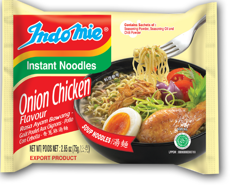
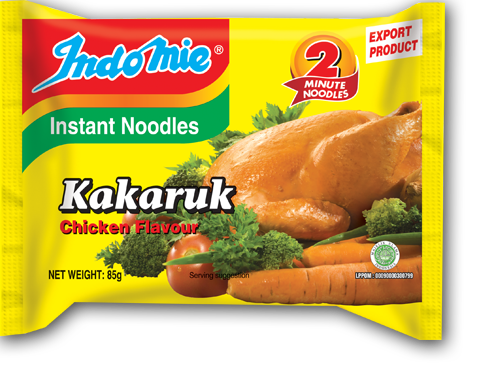

|
Indomie AyamIndomie rasa Ayam merupakan varian Indomie legendaris pertama. Rasanya yang nikmat, hangat, dan gurih, mengingatkan Anda pada rasa sup ayam klasik rumahan. |

|
Indomie Ayam SpesialIndomie rasa ayam spesial memiliki rasa yang lebih lezat dan kaya dibandingkan dengan jenis ayam biasa. Jadikan lebih istimewa dan gurih dengan menambahkan telur rebus, daging ayam, dan sayuran favorit Anda. |
|  |
Indomie Ayam BawangIndomie Rasa Ayam Bawang menawarkan perpaduan sempurna antara kaldu ayam dan rasa bawang, menghasilkan cita rasa yang kaya dan lezat untuk dinikmati semua orang. |

|
Indomie Kari AyamRasa Kari Ayam Indomie menjadi favorit bangsa sejak tahun 1982. Rasanya menawarkan cita rasa dan aroma kari khas Indonesia yang eksotik. |
|  |
Indomie Kakaruk AyamIndomie Kakaruk Rasa Ayam menawarkan cita rasa ayam yang kaya dan gurih lengkap dengan seledri kering yang nikmat membuat ketagihan. |

|
Indomie SayurIndomie rasa Sayur menawarkan rasa sayur yang ringan dan menyegarkan dengan sedikit rasa jeruk nipis. Tambahkan beberapa sayuran segar untuk menjadikannya makanan yang lezat. |

|
Indomie Daging SapiRasa kaldu sapi yang kaya rasa hangat dan menenangkan, cocok menjadi teman di cuaca dingin dan hujan. |

|
Indomie UdangRasa Indomie Udang menghadirkan kelezatan laut yang kaya ke dalam semangkuk mie Anda. Tambahkan beberapa makanan laut dan sayuran segar untuk membuat hidangan yang nikmat. |

|
Indomie Soto SpesialSoto adalah masakan berbahan dasar sup Indonesia, kaya akan rempah-rempah dengan serai sebagai bagian dari bahan-bahannya. Indomie Soto Special hadir dengan tambahan hiasan 'koya' untuk menambah aroma Soto. |